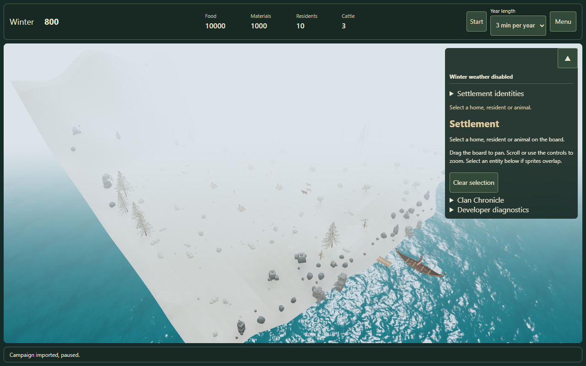
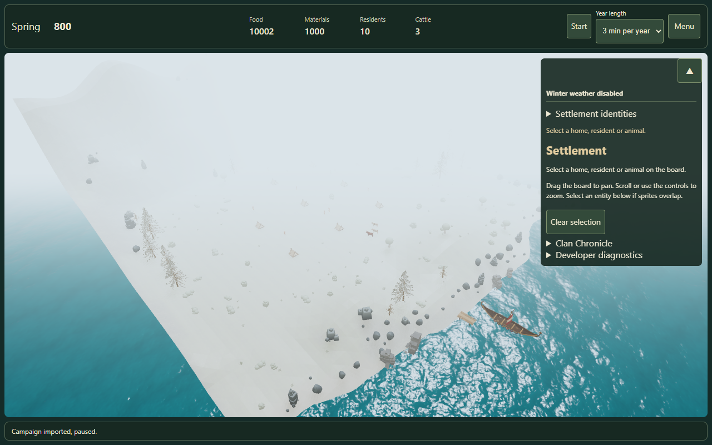
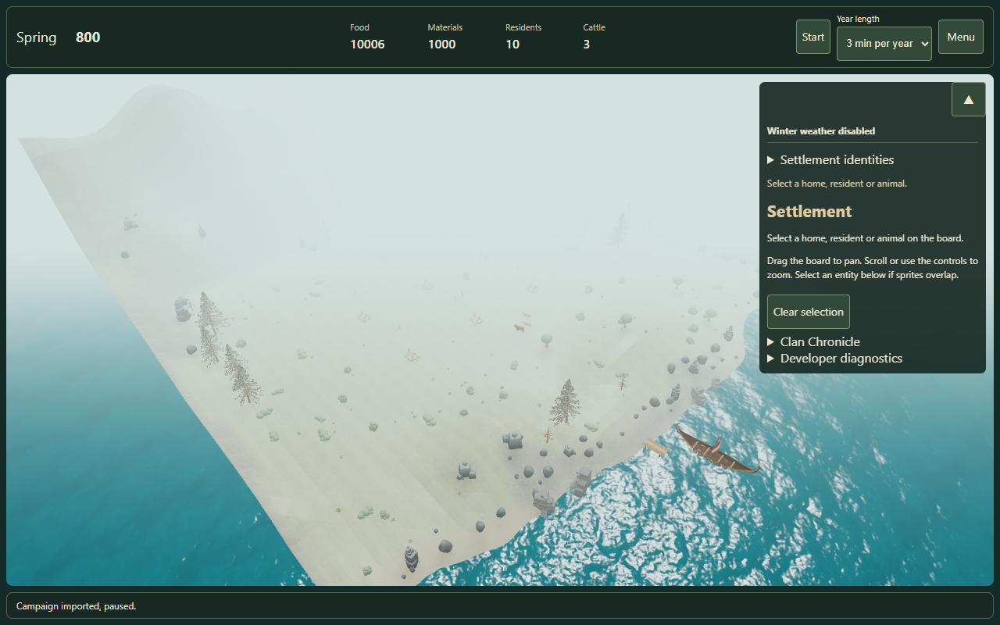
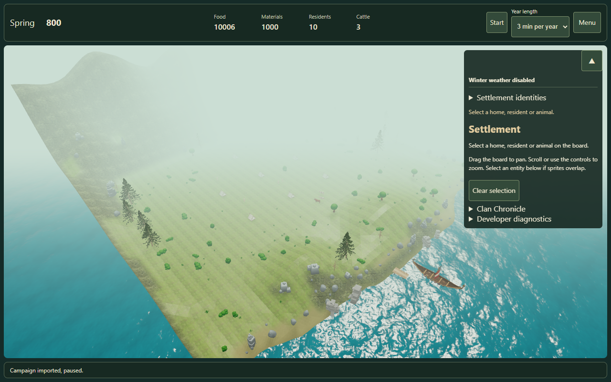
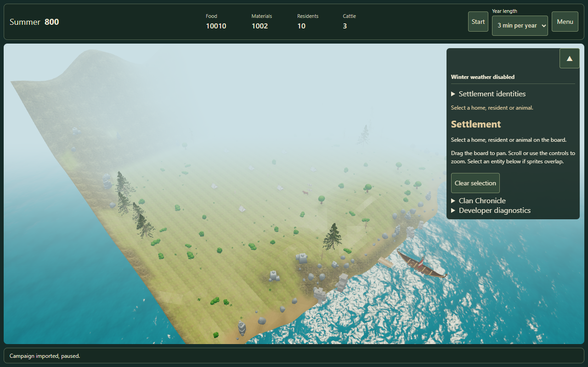
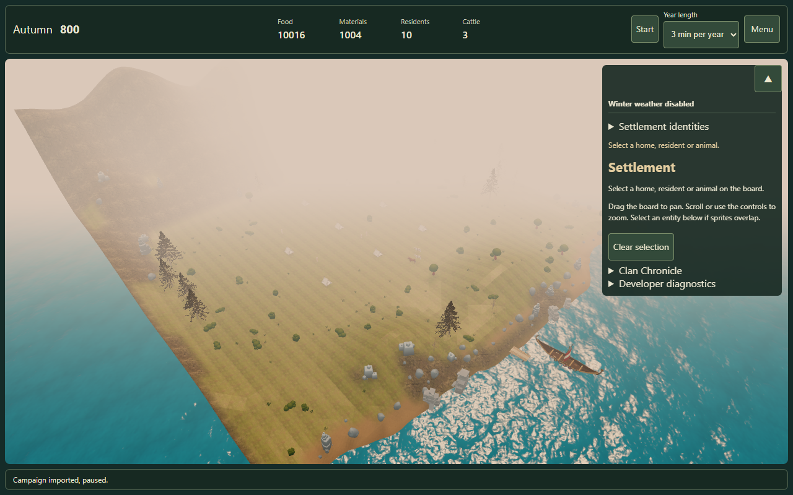

Winter · tick 0

Spring · tick 250 · still white

Spring · tick 312 · gradual thaw

Spring · tick 375

Summer · tick 500

Autumn · tick 750

Winter stays white. Thaw starts after Spring begins at tick 250, ending at 375.





